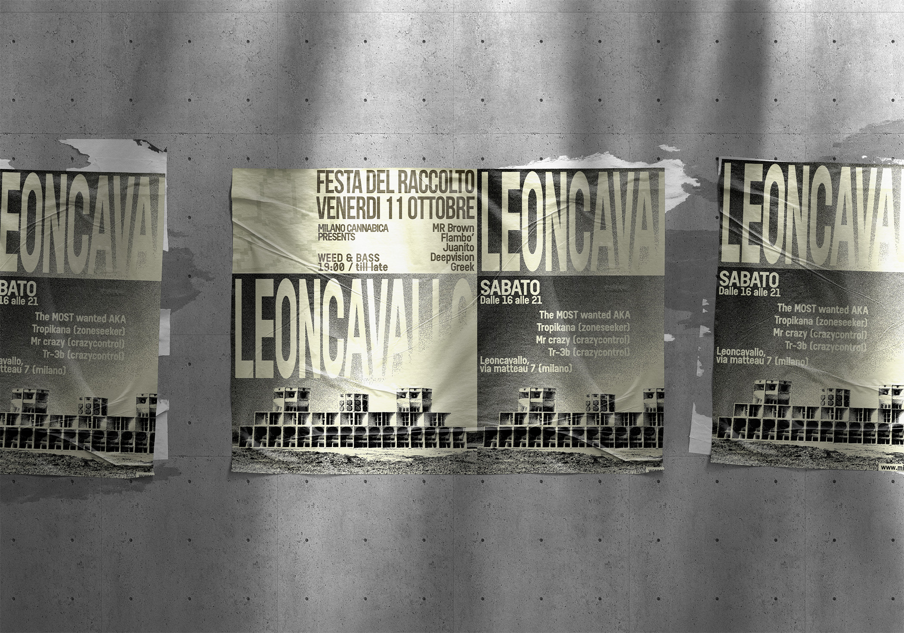

Leoncavallo
Poster design
Leoncavallo (2024).
For this project, I designed the poster for a music and market event hosted at Leoncavallo in Milan, a historic center of underground culture that is now no longer accessible after its eviction. The event brought together music, independent markets, and vendors connected to cannabis and marijuana culture, creating a space where sound, counterculture, and social exchange could coexist. The visual identity was developed to reflect this atmosphere through a direct, rough, and high-impact graphic language. The composition is built around oversized typography, strong contrast, grainy image treatment, and distorted photographic elements.
